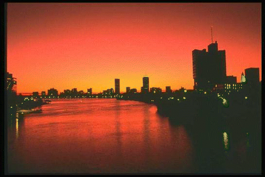
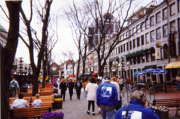
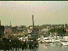
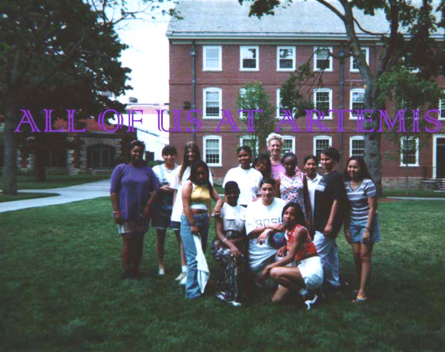

<HTML>
<HEAD><title>The Artemis Project At Boston!!</title>
</HEAD>
<BODY Bgcolor="#31b5d6">


<H1><center></center><p><FONT COLOR="white">Welcome to Our Home Page About
Our Field Trip to Boston!</FONT></h1><font size=5><p><p><center></center>
<p>The <a
href="http://www.cs.brown.edu/stc/outrea/greenhouse/artemis/">Artemis
Project</a>went to Boston on Thursday, July 10th, 1997.  First we went to
the Boston Computer Museum, and then we went...SHOPPING!!!!<p><p><p>We all enjoyed Boston. <p>Here is what we had to
say about it.<P> Dorchina-"I liked going shopping and the museum.  I also
liked the baloon hat that the man gave me. Even though it popped I still
had fun"<p>Savann-"I liked everything about the trip."<p>Julie-"I liked the
computer museum because of the hands on stuff."<p>Hie-"The
computers."<p>Saori-"I liked everybody wearing the same Artemis shirt to
represent us."<p>Diana-"I liked the guy that I met  at Boston."<p>Ashlee-"I
liked the museum."<p>Jessica-"The shopping and everything
else."<p>Natalia-"The Museum."<p>Tishea-"I liked shopping and the
food."<p>Rebecca-"I liked the computers in the museum and how you could
surf the web on them."<p>Karilenia-"I liked the big computer at the
Computer museum."
<p>Boston was a fun and interesting field trip for all of us.  We learned
alot of information that we would not have learned otherwise.  We all had a
good time and would like to thank Jess and Saori for taking the time to
organize this trip and everything else at Artemis for us.  We will always
remember you and what you did for us. <hr> <a href="main.html">Back to the
main page</a>

</BODY>
</HTML>